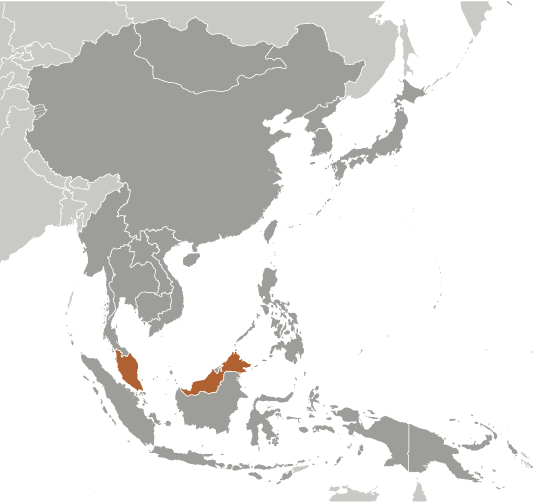
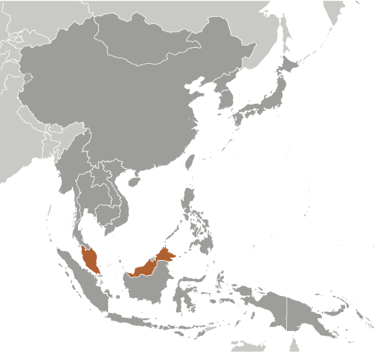

East & Southeast Asia :: MALAYSIA
Introduction :: MALAYSIA
-
During the late 18th and 19th centuries, Great Britain established colonies and protectorates in the area of current Malaysia; these were occupied by Japan from 1942 to 1945. In 1948, the British-ruled territories on the Malay Peninsula except Singapore formed the Federation of Malaya, which became independent in 1957. Malaysia was formed in 1963 when the former British colonies of Singapore, as well as Sabah and Sarawak on the northern coast of Borneo, joined the Federation. The first several years of the country's independence were marred by a communist insurgency, Indonesian confrontation with Malaysia, Philippine claims to Sabah, and Singapore's withdrawal in 1965. During the 22-year term of Prime Minister MAHATHIR bin Mohamad (1981-2003), Malaysia was successful in diversifying its economy from dependence on exports of raw materials to the development of manufacturing, services, and tourism. Prime Minister Mohamed NAJIB bin Abdul Razak (in office since April 2009) has continued these pro-business policies.
Geography :: MALAYSIA
-
Southeastern Asia, peninsula bordering Thailand and northern one-third of the island of Borneo, bordering Indonesia, Brunei, and the South China Sea, south of Vietnam2 30 N, 112 30 ESoutheast Asiatotal: 329,847 sq kmland: 328,657 sq kmwater: 1,190 sq kmcountry comparison to the world: 67slightly larger than New Mexicototal: 2,742 kmborder countries (3): Brunei 266 km, Indonesia 1,881 km, Thailand 595 km4,675 km (Peninsular Malaysia 2,068 km, East Malaysia 2,607 km)territorial sea: 12 nmexclusive economic zone: 200 nmcontinental shelf: 200-m depth or to the depth of exploitation; specified boundary in the South China Seatropical; annual southwest (April to October) and northeast (October to February) monsoonscoastal plains rising to hills and mountainsmean elevation: 419 melevation extremes: lowest point: Indian Ocean 0 mhighest point: Gunung Kinabalu 4,100 mtin, petroleum, timber, copper, iron ore, natural gas, bauxiteagricultural land: 23.2%arable land 2.9%; permanent crops 19.4%; permanent pasture 0.9%forest: 62%other: 14.8% (2011 est.)3,800 sq km (2012)flooding; landslides; forest firesair pollution from industrial and vehicular emissions; water pollution from raw sewage; deforestation; smoke/haze from Indonesian forest firesparty to: Biodiversity, Climate Change, Climate Change-Kyoto Protocol, Desertification, Endangered Species, Hazardous Wastes, Law of the Sea, Marine Life Conservation, Ozone Layer Protection, Ship Pollution, Tropical Timber 83, Tropical Timber 94, Wetlandssigned, but not ratified: none of the selected agreementsstrategic location along Strait of Malacca and southern South China Sea
People and Society :: MALAYSIA
-
30,949,962 (July 2016 est.)country comparison to the world: 42noun: Malaysian(s)adjective: MalaysianMalay 50.1%, Chinese 22.6%, indigenous 11.8%, Indian 6.7%, other 0.7%, non-citizens 8.2% (2010 est.)Bahasa Malaysia (official), English, Chinese (Cantonese, Mandarin, Hokkien, Hakka, Hainan, Foochow), Tamil, Telugu, Malayalam, Panjabi, Thainote: in East Malaysia there are several indigenous languages; most widely spoken are Iban and KadazanMuslim (official) 61.3%, Buddhist 19.8%, Christian 9.2%, Hindu 6.3%, Confucianism, Taoism, other traditional Chinese religions 1.3%, other 0.4%, none 0.8%, unspecified 1% (2010 est.)0-14 years: 28.16% (male 4,484,188/female 4,231,557)15-24 years: 16.86% (male 2,647,105/female 2,571,883)25-54 years: 41.06% (male 6,430,455/female 6,276,427)55-64 years: 8.06% (male 1,266,415/female 1,227,690)65 years and over: 5.86% (male 861,151/female 953,091) (2016 est.)total dependency ratio: 43.6%youth dependency ratio: 35.2%elderly dependency ratio: 8.4%potential support ratio: 11.9% (2015 est.)total: 28.2 yearsmale: 28 yearsfemale: 28.5 years (2016 est.)country comparison to the world: 1301.4% (2016 est.)country comparison to the world: 8319.4 births/1,000 population (2016 est.)country comparison to the world: 855.1 deaths/1,000 population (2016 est.)country comparison to the world: 186-0.3 migrant(s)/1,000 population (2016 est.)country comparison to the world: 121urban population: 74.7% of total population (2015)rate of urbanization: 2.66% annual rate of change (2010-15 est.)KUALA LUMPUR (capital) 6.837 million; Johor Bahru 912,000 (2015)at birth: 1.07 male(s)/female0-14 years: 1.06 male(s)/female15-24 years: 1.03 male(s)/female25-54 years: 1.02 male(s)/female55-64 years: 1.03 male(s)/female65 years and over: 0.9 male(s)/femaletotal population: 1.03 male(s)/female (2016 est.)40 deaths/100,000 live births (2015 est.)country comparison to the world: 125total: 12.9 deaths/1,000 live birthsmale: 14.9 deaths/1,000 live birthsfemale: 10.8 deaths/1,000 live births (2016 est.)country comparison to the world: 113total population: 75 yearsmale: 72.2 yearsfemale: 78 years (2016 est.)country comparison to the world: 1102.53 children born/woman (2016 est.)country comparison to the world: 774.2% of GDP (2014)country comparison to the world: 1611.2 physicians/1,000 population (2010)1.9 beds/1,000 population (2012)improved:urban: 100% of populationrural: 93% of populationtotal: 98.2% of populationunimproved:urban: 0% of populationrural: 7% of populationtotal: 1.8% of population (2015 est.)improved:urban: 96.1% of populationrural: 95.9% of populationtotal: 96% of populationunimproved:urban: 3.9% of populationrural: 4.1% of populationtotal: 4% of population (2015 est.)0.4% (2015 est.)country comparison to the world: 7291,600 (2015 est.)country comparison to the world: 447,200 (2015 est.)country comparison to the world: 27degree of risk: intermediatefood or waterborne diseases: bacterial diarrheavectorborne diseases: dengue feverwater contact disease: leptospirosis (2016)12.9% (2014)country comparison to the world: 12312.9% (2006)country comparison to the world: 586.1% of GDP (2013)country comparison to the world: 46definition: age 15 and over can read and writetotal population: 94.6%male: 96.2%female: 93.2% (2015 est.)total: 14 yearsmale: NAfemale: NA (2014)total: 10.2%male: 9.3%female: 11.6% (2014 est.)country comparison to the world: 100
Government :: MALAYSIA
-
conventional long form: noneconventional short form: Malaysialocal long form: nonelocal short form: Malaysiaformer: Federation of Malayaetymology: the name means "Land of the Malays"federal constitutional monarchynote: nominally headed by paramount ruler (commonly referred to as the king) and a bicameral Parliament consisting of a nonelected upper house and an elected lower house; all Peninsular Malaysian states have hereditary rulers (commonly referred to as sultans) except Melaka (Malacca) and Pulau Pinang (Penang); those two states along with Sabah and Sarawak in East Malaysia have governors appointed by government; powers of state governments are limited by federal constitution; under terms of federation, Sabah and Sarawak retain certain constitutional prerogatives (e.g., right to maintain their own immigration controls)name: Kuala Lumpur; note - nearby Putrajaya is referred to as a federal government administrative center but not the capital; Parliament meets in Kuala Lumpurgeographic coordinates: 3 10 N, 101 42 Etime difference: UTC+8 (13 hours ahead of Washington, DC, during Standard Time)13 states (negeri-negeri, singular - negeri); Johor, Kedah, Kelantan, Melaka, Negeri Sembilan, Pahang, Perak, Perlis, Pulau Pinang, Sabah, Sarawak, Selangor, Terengganu; and 1 federal territory (Wilayah Persekutuan) with 3 components, Kuala Lumpur, Labuan, and Putrajaya31 August 1957 (from the UK)Independence Day 31 August (1957) (independence of Malaya); Malaysia Day 16 September (1963) (formation of Malaysia)previous 1948; latest drafted 21 February 1957, effective 27 August 1957; amended many times, last in 2010 (2016)mixed legal system of English common law, Islamic law, and customary law; judicial review of legislative acts in the Federal Court at request of supreme head of the federationhas not submitted an ICJ jurisdiction declaration; non-party state to the ICCtcitizenship by birth: nocitizenship by descent only: at least one parent must be a citizen of Malaysiadual citizenship recognized: noresidency requirement for naturalization: 10 out 12 years preceding application21 years of age; universalchief of state: King MUHAMMAD V (formerly known as Tuanku Muhammad Faris Petra) (selected on 14 October 2016; installed on 13 December 2016); the position of the king is primarily ceremonial but he is the final arbiter on the appointment of the prime ministerhead of government: Prime Minister Mohamed NAJIB bin Abdul Najib Razak (since 3 April 2009); Deputy Prime Minister Ahmad ZAHID Hamidi (since 29 July 2015)cabinet: Cabinet appointed by the prime minister from among members of Parliament with the consent of the kingelections/appointments: king elected by and from the hereditary rulers of 9 states for a 5-year term; election is on a rotational basis among rulers of the 9 states; election last held on 14 October 2016 (next to be held in 2021); prime minister designated from among members of the House of Representatives; following legislative elections, the leader who commands support of the majority of members in the House becomes prime ministerelection results: Mohamed NAJIB bin Abdul Najib Razak (UMNO) sworn in as prime minister for second term on 3 April 2009description: bicameral Parliament or Parlimen consists of the Senate or Dewan Negara (70 seats; 44 members appointed by the king and 26 indirectly elected by 13 state legislatures; members serve 3-year terms) and the House of Representatives or Dewan Rakyat (222 seats; members directly elected in single-seat constituencies by simple majority vote to serve 5-year terms)elections: House of Representatives - last held on 5 May 2013 (next to be held by May 2018)election results: House of Representatives - percent of vote by party/coalition - BN 47.4%, People's Alliance (DAP, PAS, PKR) 50.9%, other 1.7%; seats by party/coalition - BN 133, People's Alliance (DAP, PAS, PKR) 89note: seats by party/coalition as of October 2016 - BN 132, PH 72 (DAP 37, PKR 28, AMANAH 6, PPBM 1), PAS 14, WARISAN 2, PSM 1, independent 1highest court(s): Federal Court (consists of the chief justice, president of the Court of Appeal, chief justice of the High Court of Malaya, chief judge of the High Court of Sabah and Sarawak and 7 judges); note - Malaysia has a dual judicial hierarchy of civil and religious (sharia) courtsjudge selection and term of office: Federal Court justices appointed by the monarch on advice of the prime minister; judges serve until mandatory retirement at age 65subordinate courts: Court of Appeal; High Court; Sessions Court; Magistrates' CourtNational Front (Barisan Nasional) or BN::Gerakan Rakyat Malaysia Party or GERAKAN [MAH Siew Keong]Liberal Democratic Party (Parti Liberal Demokratik - Sabah) or LDP [TEO Chee Kang]Malaysian Chinese Association (Persatuan China Malaysia) or MCA [LIOW Tiong Lai]Malaysian Indian Congress (Kongres India Malaysia) or MIC [S. SUBRAMANIAM]Parti Bersatu Rakyat Sabah or PBRS [Joseph KURUP]Parti Bersatu Sabah or PBS [Joseph PAIRIN Kitingan]Parti Pesaka Bumiputera Bersatu or PBB [Adenan SATEM]Parti Rakyat Sarawak or PRS [James MASING]Sarawak Progressive Democratic Party or SPDP [TIONG King Sing]Sarawak United People's Party (Parti Bersatu Rakyat Sarawak) or SUPP [Dr. SIM Kui Hian]United Malays National Organization or UMNO [NAJIB bin Abdul Razak]United Pasokmomogun Kadazandusun Murut Organization (Pertubuhan Pasko Momogun Kadazan Dusun Bersatu) or UPKO [Wilfred Madius TANGAU]People's Progressive Party (Parti Progresif Penduduk Malaysia) or PPP [M. Kayveas]Coalition of Hope (Pakatan Harapan) or PH::Democratic Action Party (Parti Tindakan Demokratik) or DAP [TAN Kok Wai, Acting National Chairman]National Trust Party (Parti Amanah Negara) or Amanah [Mohamad SABU]People's Justice Party (Parti Keadilan Rakyat) or PKR [WAN AZIZAH Wan Ismail]Parti Pribumi Bersatu Malaysia or PPBM [MAHATHIR Mohamad]Other::Islamic Party of Malaysia (Parti Islam se Malaysia) or PAS [Abdul HADI Awang]Sabah Heritage Party or WARISAN [Shafie APDAL]Socialist Party of Malaysia (Parti Sosialis Malaysia) or PSM [Mohd Nasir HASHIM]Bar CouncilBERSIH (electoral reform coalition)ISMA (Muslim NGO)PERKASA (defense of Malay rights)other: religious groups; women's groups; youth groupsADB, APEC, ARF, ASEAN, BIS, C, CICA (observer), CP, D-8, EAS, FAO, G-15, G-77, IAEA, IBRD, ICAO, ICC (national committees), ICRM, IDA, IDB, IFAD, IFC, IFRCS, IHO, ILO, IMF, IMO, IMSO, Interpol, IOC, IPU, ISO, ITSO, ITU, ITUC (NGOs), MIGA, MINURSO, MONUSCO, NAM, OIC, OPCW, PCA, PIF (partner), UN, UN Security Council (temporary), UNAMID, UNCTAD, UNESCO, UNIDO, UNIFIL, UNISFA, UNMIL, UNWTO, UPU, WCO, WFTU (NGOs), WHO, WIPO, WMO, WTOchief of mission: Ambassador AWANG ADEK Bin Hussin (since 21 May 2015)chancery: 3516 International Court NW, Washington, DC 20008telephone: [1] (202) 572-9700FAX: [1] (202) 572-9882consulate(s) general: Los Angeles, New Yorkchief of mission: Ambassador Joseph Y. YUN (since 2 October 2013)embassy: 376 Jalan Tun Razak, 50400 Kuala Lumpurmailing address: US Embassy Kuala Lumpur, APO AP 96535-8152telephone: [60] (3) 2168-5000FAX: [60] (3) 2142-220714 equal horizontal stripes of red (top) alternating with white (bottom); there is a blue rectangle in the upper hoist-side corner bearing a yellow crescent and a yellow 14-pointed star; the flag is often referred to as Jalur Gemilang (Stripes of Glory); the 14 stripes stand for the equal status in the federation of the 13 member states and the federal government; the 14 points on the star represent the unity between these entities; the crescent is a traditional symbol of Islam; blue symbolizes the unity of the Malay people and yellow is the royal color of Malay rulersnote: the design is based on the flag of the UStiger, hibiscus; national colors: red, white, blue, yellowname: "Negaraku" (My Country)lyrics/music: collective, led by Tunku ABDUL RAHMAN/Pierre Jean DE BERANGERnote: adopted 1957; full version only performed in the presence of the king; the tune, which was adopted from a popular French melody titled "La Rosalie," was originally the anthem of Perak, one of Malaysia's 13 states
Economy :: MALAYSIA
-
Malaysia, a middle-income country, has transformed itself since the 1970s from a producer of raw materials into an emerging multi-sector economy. Under current Prime Minister NAJIB, Malaysia is attempting to achieve high-income status by 2020 and to move farther up the value-added production chain by attracting investments in Islamic finance, high technology industries, biotechnology, and services. NAJIB's Economic Transformation Program is a series of projects and policy measures intended to accelerate the country's economic growth. The government has also taken steps to liberalize some services sub-sectors. Malaysia is vulnerable to a fall in world commodity prices or a general slowdown in global economic activity.The NAJIB administration is continuing efforts to boost domestic demand and reduce the economy's dependence on exports. Nevertheless, exports - particularly of electronics, oil and gas, palm oil, and rubber - remain a significant driver of the economy. Gross exports of goods and services constitute more than 80% of GDP. The oil and gas sector supplied about 29% of government revenue in 2014. As an oil and gas exporter, Malaysia has previously profited from higher world energy prices, although the rising cost of domestic gasoline and diesel fuel, combined with sustained budget deficits, has forced Kuala Lumpur to begin to address fiscal shortfalls, through initial reductions in energy and sugar subsidies and the announcement of the 2015 implementation of a 6% goods and services tax. Falling global oil prices in the second half of 2014 have strained government finances, shrunk Malaysia’s current account surplus and put downward pressure on the ringgit. The government is trying to lessen its dependence on state oil producer Petronas.Bank Negara Malaysia (the central bank) maintains healthy foreign exchange reserves; a well-developed regulatory regime has limited Malaysia's exposure to riskier financial instruments and the global financial crisis. In order to attract increased investment, NAJIB raised possible revisions to the special economic and social preferences accorded to ethnic Malays under the New Economic Policy of 1970, but retreated in 2013 after he encountered significant opposition from Malay nationalists and other vested interests. In September 2013 NAJIB launched the new Bumiputra Economic Empowerment Program, policies that favor and advance the economic condition of ethnic Malays.Malaysia is a member of the 12-nation Trans-Pacific Partnership free trade agreement negotiations and, with the nine other ASEAN members, will form the ASEAN Economic Community in 2015.$815.6 billion (2015 est.)$777.2 billion (2014 est.)$733.2 billion (2013 est.)note: data are in 2015 US dollarscountry comparison to the world: 29$296.2 billion (2015 est.)5% (2015 est.)6% (2014 est.)4.7% (2013 est.)country comparison to the world: 42$26,300 (2015 est.)$25,400 (2014 est.)$24,500 (2013 est.)note: data are in 2015 US dollarscountry comparison to the world: 7128.1% of GDP (2015 est.)29.4% of GDP (2014 est.)29.4% of GDP (2013 est.)country comparison to the world: 38household consumption: 54.1%government consumption: 13.1%investment in fixed capital: 26.2%investment in inventories: -1.1%exports of goods and services: 70.9%imports of goods and services: -63.3% (2015 est.)agriculture: 8.5%industry: 37.7%services: 53.8% (2015 est.)Peninsular Malaysia - palm oil, rubber, cocoa, rice; Sabah - palm oil, subsistence crops; rubber, timber; Sarawak - palm oil, rubber, timber; pepperPeninsular Malaysia - rubber and oil palm processing and manufacturing, petroleum and natural gas, light manufacturing, pharmaceuticals, medical technology, electronics and semiconductors, timber processing; Sabah - logging, petroleum and natural gas production; Sarawak - agriculture processing, petroleum and natural gas production, logging5.5% (2015 est.)country comparison to the world: 3814.52 million (2015 est.)country comparison to the world: 40agriculture: 11%industry: 36%services: 53% (2012 est.)3.2% (2015 est.)2.9% (2014 est.)country comparison to the world: 263.8% (2009 est.)lowest 10%: 1.8%highest 10%: 34.7% (2009 est.)46.2 (2009)49.2 (1997)country comparison to the world: 33revenues: $56.1 billionexpenditures: $65.62 billion (2015 est.)18.9% of GDP (2015 est.)country comparison to the world: 168-3.2% of GDP (2015 est.)country comparison to the world: 12254.5% of GDP (2015 est.)52.7% of GDP (2014 est.)note: this figure is based on the amount of federal government debt; this includes Malaysian Treasury bills and other government securities, as well as loans raised externally and bonds and notes issued overseas; this figure excludes debt issued by non-financial public enterprises and guaranteed by the federal governmentcountry comparison to the world: 70calendar year2.1% (2015 est.)3.1% (2014 est.)note: approximately 30% of goods are price-controlledcountry comparison to the world: 1233% (31 December 2011)2.83% (31 December 2010)country comparison to the world: 1054.57% (31 December 2015 est.)4.67% (31 December 2014 est.)country comparison to the world: 146$83.97 billion (31 December 2015 est.)$99.12 billion (31 December 2014 est.)country comparison to the world: 40$478.7 billion (31 December 2014 est.)$440.3 billion (31 December 2013 est.)country comparison to the world: 24$390.7 billion (31 December 2015 est.)$444.8 billion (31 December 2014 est.)country comparison to the world: 28$476.3 billion (31 December 2015 est.)$395.1 billion (31 December 2014 est.)$410.5 billion (31 December 2013 est.)country comparison to the world: 26$8.712 billion (2015 est.)$14.46 billion (2014 est.)country comparison to the world: 24$175.7 billion (2015 est.)$207.5 billion (2014 est.)country comparison to the world: 27semiconductors and electronic equipment, palm oil, petroleum and liquefied natural gas, wood and wood products, palm oil, rubber, textiles, chemicals, solar panelsSingapore 13.9%, China 13%, Japan 9.5%, US 9.4%, Thailand 5.7%, Hong Kong 4.7%, India 4.1% (2015)$147.7 billion (2015 est.)$172.9 billion (2014 est.)country comparison to the world: 29electronics, machinery, petroleum products, plastics, vehicles, iron and steel products, chemicalsChina 18.8%, Singapore 12%, US 8.1%, Japan 7.8%, Thailand 6.1%, South Korea 4.5%, Indonesia 4.5% (2015)$95.29 billion (31 December 2015 est.)$115.9 billion (31 December 2014 est.)country comparison to the world: 24$186.5 billion (31 December 2015 est.)$210.8 billion (31 December 2014 est.)country comparison to the world: 35$144.7 billion (31 December 2015 est.)$133.8 billion (31 December 2014 est.)country comparison to the world: 35$145.6 billion (31 December 2015 est.)$135.7 billion (31 December 2014 est.)country comparison to the world: 28ringgits (MYR) per US dollar -3.9055 (2015 est.)3.27 (2014 est.)3.27 (2013 est.)3.09 (2012 est.)3.06 (2011 est.)
Energy :: MALAYSIA
-
population without electricity: 100,000electrification - total population: 99.5%electrification - urban areas: 99.8%electrification - rural areas: 98.7% (2013)139 billion kWh (2014 est.)country comparison to the world: 30131 billion kWh (2014 est.)country comparison to the world: 2912 million kWh (2014 est.)country comparison to the world: 8923 million kWh (2014 est.)country comparison to the world: 8230 million kW (2014 est.)country comparison to the world: 3087.6% of total installed capacity (2012 est.)country comparison to the world: 820% of total installed capacity (2012 est.)country comparison to the world: 14811.6% of total installed capacity (2012 est.)country comparison to the world: 1100.8% of total installed capacity (2012 est.)country comparison to the world: 97654,200 bbl/day (2015 est.)country comparison to the world: 26299,100 bbl/day (2013 est.)country comparison to the world: 28180,200 bbl/day (2013 est.)country comparison to the world: 333.6 billion bbl (1 January 2016 es)country comparison to the world: 27544,900 bbl/day (2013 est.)country comparison to the world: 30745,000 bbl/day (2014 est.)country comparison to the world: 30243,300 bbl/day (2013 est.)country comparison to the world: 29410,200 bbl/day (2013 est.)country comparison to the world: 2365.42 billion cu m (2014 est.)country comparison to the world: 1435.18 billion cu m (2014 est.)country comparison to the world: 3034.87 billion cu m (2014 est.)country comparison to the world: 104.63 billion cu m (2014 est.)country comparison to the world: 461.183 trillion cu m (1 January 2016 es)country comparison to the world: 16208 million Mt (2013 est.)country comparison to the world: 30
Communications :: MALAYSIA
-
total subscriptions: 4,394,559subscriptions per 100 inhabitants: 14 (July 2015 est.)country comparison to the world: 37total: 44.111 millionsubscriptions per 100 inhabitants: 145 (July 2015 est.)country comparison to the world: 31general assessment: modern system featuring good intercity service on Peninsular Malaysia provided mainly by microwave radio relay and an adequate intercity microwave radio relay network between Sabah and Sarawak via Brunei; international service excellentdomestic: domestic satellite system with 2 earth stations; combined fixed-line and mobile-cellular teledensity roughly 160 per 100 personsinternational: country code - 60; landing point for several major international submarine cable networks that provide connectivity to Asia, Middle East, and Europe; satellite earth stations - 2 Intelsat (1 Indian Ocean, 1 Pacific Ocean) (2015)state-owned TV broadcaster operates 2 TV networks with relays throughout the country, and the leading private commercial media group operates 4 TV stations with numerous relays throughout the country; satellite TV subscription service is available; state-owned radio broadcaster operates multiple national networks, as well as regional and local stations; many private commercial radio broadcasters and some subscription satellite radio services are available; about 55 radio stations overall (2012).mytotal: 21.684 millionpercent of population: 71.1% (July 2015 est.)country comparison to the world: 40
Transportation :: MALAYSIA
-
number of registered air carriers: 12inventory of registered aircraft operated by air carriers: 263annual passenger traffic on registered air carriers: 50,347,149annual freight traffic on registered air carriers: 2,005,979,379 mt-km (2015)9M (2016)114 (2013)country comparison to the world: 51total: 39over 3,047 m: 82,438 to 3,047 m: 81,524 to 2,437 m: 7914 to 1,523 m: 8under 914 m: 8 (2013)total: 75914 to 1,523 m: 6under 914 m: 69 (2013)4 (2013)condensate 354 km; gas 6,439 km; liquid petroleum gas 155 km; oil 1,937 km; oil/gas/water 43 km; refined products 114 km; water 26 km (2013)total: 1,849 kmstandard gauge: 59 km 1.435-m gauge (59 km electrified)narrow gauge: 1,792 km 1.000-m gauge (339 km electrified) (2014)country comparison to the world: 74total: 144,403 km (excludes local roads)paved: 116,169 km (includes 1,821 km of expressways)unpaved: 28,234 km (2010)country comparison to the world: 337,200 km (Peninsular Malaysia 3,200 km; Sabah 1,500 km; Sarawak 2,500 km) (2011)country comparison to the world: 19total: 315by type: bulk carrier 11, cargo 83, carrier 2, chemical tanker 47, container 41, liquefied gas 34, passenger/cargo 4, petroleum tanker 86, roll on/roll off 2, vehicle carrier 5foreign-owned: 26 (Denmark 1, Hong Kong 8, Japan 2, Russia 2, Singapore 13)registered in other countries: 82 (Bahamas 13, India 1, Indonesia 1, Isle of Man 6, Malta 1, Marshall Islands 11, Panama 12, Papua New Guinea 1, Philippines 1, Saint Kitts and Nevis 1, Singapore 27, Thailand 3, US 2, unknown 2) (2010)country comparison to the world: 31major seaport(s): Bintulu, Johor Bahru, George Town (Penang), Port Kelang (Port Klang), Tanjung Pelepascontainer port(s) (TEUs): George Town (Penang)(1,202,180), Port Kelang (Port Klang)(9,435,403), Tanjung Pelepas (7,302,461)LNG terminal(s) (export): Bintulu (Sarawak)LNG terminal(s) (import): Sungei Udangthe International Maritime Bureau reports that the territorial and offshore waters in the Strait of Malacca and South China Sea remain high risk for piracy and armed robbery against ships; in the past, commercial vessels have been attacked and hijacked both at anchor and while underway; hijacked vessels are often disguised and cargo diverted to ports in East Asia; crews have been murdered or cast adrift; 24 attacks were reported in 2014
Military and Security :: MALAYSIA
-
Malaysian Armed Forces (Angkatan Tentera Malaysia, ATM): Malaysian Army (Tentera Darat Malaysia), Royal Malaysian Navy (Tentera Laut Diraja Malaysia, TLDM), Royal Malaysian Air Force (Tentera Udara Diraja Malaysia, TUDM) (2013)17 years 6 months of age for voluntary military service (younger with parental consent and proof of age); mandatory retirement age 60; women serve in the Malaysian Armed Forces; no conscription (2013)1.5% of GDP (2014)1.5% of GDP (2013)1.55% of GDP (2012)1.67% of GDP (2011)1.55% of GDP (2010)country comparison to the world: 58
Transnational Issues :: MALAYSIA
-
while the 2002 "Declaration on the Conduct of Parties in the South China Sea" has eased tensions over the Spratly Islands, it is not the legally binding "code of conduct" sought by some parties; Malaysia was not party to the March 2005 joint accord among the national oil companies of China, the Philippines, and Vietnam on conducting marine seismic activities in the Spratly Islands; disputes continue over deliveries of fresh water to Singapore, Singapore's land reclamation, bridge construction, and maritime boundaries in the Johor and Singapore Straits; in 2008, ICJ awarded sovereignty of Pedra Branca (Pulau Batu Puteh/Horsburgh Island) to Singapore, and Middle Rocks to Malaysia, but did not rule on maritime regimes, boundaries, or disposition of South Ledge; land and maritime negotiations with Indonesia are ongoing, and disputed areas include the controversial Tanjung Datu and Camar Wulan border area in Borneo and the maritime boundary in the Ambalat oil block in the Celebes Sea; separatist violence in Thailand's predominantly Muslim southern provinces prompts measures to close and monitor border with Malaysia to stem terrorist activities; Philippines retains a dormant claim to Malaysia's Sabah State in northern Borneo; per Letters of Exchange signed in 2009, Malaysia in 2010 ceded two hydrocarbon concession blocks to Brunei in exchange for Brunei's sultan dropping claims to the Limbang corridor, which divides Brunei; piracy remains a problem in the Malacca Straitrefugees (country of origin): 88,637 (Burma) (2015)stateless persons: 11,689 (2015); note - Malaysia's stateless population consists of Rohingya refugees from Burma, ethnic Indians, and the children of Filipino and Indonesian illegal migrants; Burma stripped the Rohingya of their nationality in 1982; Filipino and Indonesian children who have not have been registered for birth certificates by their parents or who received birth certificates stamped "foreigner" are not eligible to attend government schools; these children are vulnerable to statelessness should they not be able to apply to their parents' country of origin for passportscurrent situation: Malaysia is a destination and, to a lesser extent, a source and transit country for men, women, and children subjected to forced labor and women and children subjected to sex trafficking; Malaysia is mainly a destination country for foreign workers who migrate willingly from countries, including Indonesia, Bangladesh, the Philippines, Nepal, Burma, and other Southeast Asian countries, but subsequently encounter forced labor or debt bondage in agriculture, construction, factories, and domestic service at the hands of employers, employment agents, and labor recruiters; women from Southeast Asia and, to a much lesser extent, Africa, are recruited for legal work in restaurants, hotels, and salons but are forced into prostitution; refugees, including Rohingya adults and children, are not legally permitted to work and are vulnerable to trafficking; a small number of Malaysians are trafficked internally and subjected to sex trafficking abroadtier rating: Tier 2 Watch list - Malaysia does not fully comply with the minimum standards for the elimination of trafficking; however, it is making significant efforts to do so; in 2014, amendments to strengthen existing anti-trafficking laws, including enabling victims to move freely and to work and for NGOs to run protective facilities, were drafted by the government and are pending approval from Parliament; authorities more than doubled investigations and prosecutions but convicted only three traffickers for forced labor and none for sex trafficking, a decline from 2013 and a disproportionately small number compared to the scale of the country’s trafficking problem; NGOs provided the majority of victim rehabilitation and counseling services with no financial support from the government (2015)drug trafficking prosecuted vigorously, including enforcement of the death penalty; heroin still primary drug of abuse, but synthetic drug demand remains strong; continued ecstasy and methamphetamine producer for domestic users and, to a lesser extent, the regional drug market